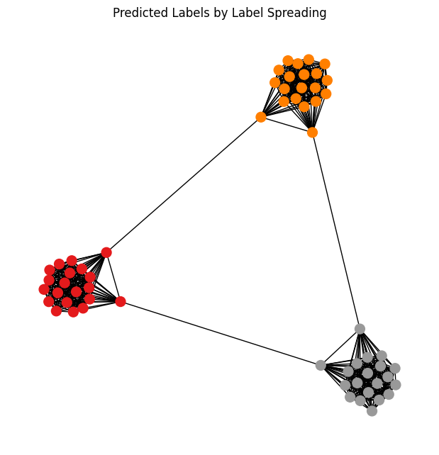
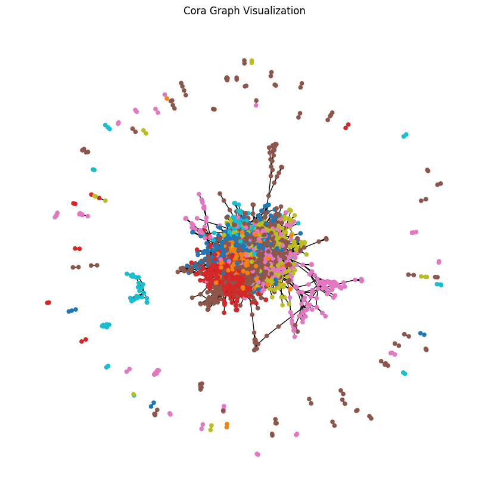

Shallow Embedding Methods#
In the realm of semi-supervised learning on graphs, shallow embedding methods like Label Propagation and Label Spreading serve as foundational algorithms. These methods leverage the graph structure and limited labeled data to infer labels for the remaining nodes.
Unlike supervised deep models (like GNNs), these algorithms do not require training parameters, and they propagate label information through the graph topology using simple matrix operations.
Unsupervised vs. Supervised Embedding Methods#
The main difference between unsupervised and supervised embedding techniques lies in their objectives:
Unsupervised methods aim to learn node (or graph) embeddings that preserve structural patterns, often useful for clustering or link prediction.
Supervised methods, in contrast, seek to learn embeddings that are useful for a specific prediction task, such as node classification, using available label information.
Shallow methods like Label Propagation and Label Spreading fall under the umbrella of semi-supervised learning, where a small subset of nodes are labeled, and the goal is to infer the labels of the rest.
Label Propagation Algorithm (LPA)#
Description#
The Label Propagation Algorithm (LPA) is a classic, non-parametric algorithm for semi-supervised node classification. It works by iteratively propagating labels from labeled nodes to their neighbors.
The key idea:
If two nodes are connected or likely to co-occur in a random walk, they are likely to belong to the same class.
Intuition#
Each labeled node keeps its label fixed during training.
Labels of unlabeled nodes are updated in each iteration based on their neighbors’ current labels.
Over time, labels diffuse throughout the graph.
Mathematical Formulation#
Let:
\( G = (V, E) \) be the graph with \( |V| = n \) nodes.
\( \mathbf{A} \in \mathbb{R}^{n \times n} \): Adjacency matrix
\( \mathbf{D} \): Diagonal degree matrix, where \( D_{ii} = \sum_j A_{ij} \)
\( \mathbf{Y} \in \mathbb{R}^{n \times c} \): Label matrix (one-hot vectors for known classes):
Each row corresponds to a node.
If a node \( i \) is labeled with class \( k \), then \( Y_{ik} = 1 \), and all other entries in row \( i \) are zero.
If a node is unlabeled, its row in \( \mathbf{Y} \) is all zeros.
The label propagation update rule is:
\( \mathbf{F}^{(t)} \): Soft label distribution at iteration \(t\)
\( \mathbf{S} \): Normalized transition matrix (row-stochastic)
After each step, labels of initially labeled nodes are reset to their original values.
\( \mathbf{F}^{(0)} = \mathbf{Y} \)
That is:
Labeled nodes: initialized with one-hot vectors corresponding to their class.
Unlabeled nodes: initialized with zero vectors.
Characteristics#
Fast and scalable (no learning)
Deterministic convergence
Sensitive to incorrect initial labels, because they remain unchanged and errors propagate.
Label Spreading Algorithm (LSA)#
Motivation#
Label Propagation’s main weakness is its rigid treatment of labeled nodes — their labels remain fixed throughout the iterations. This rigidity can be harmful when:
Labeled data is noisy or incorrect.
The graph is sparse or contains ambiguous connections.
To address this, Label Spreading allows labels to “float” and adapt, including for initially labeled nodes.
Mathematical Formulation#
Let:
\( \mathbf{A} \in \mathbb{R}^{n \times n} \): Adjacency matrix
\(\mathbf{D} \): Degree matrix
\( \mathbf{L} \): Normalized graph Laplacian
Instead of using the transition matrix \( \mathbf{S} \), Label Spreading defines:
The update rule becomes:
Where:
\( \alpha \in (0,1) \): Controls the strength of propagation vs. prior label adherence
\( \mathbf{Y}\): Original label matrix
Unlike LPA, initial labels are not clamped — they evolve during training.
Key Differences Between LPA and LSA#
Feature |
Label Propagation (LPA) |
Label Spreading (LSA) |
|---|---|---|
Fixed labels |
Yes (clamped) |
No (adaptive) |
Robust to noisy labels |
No |
Yes |
Update matrix |
\( \mathbf{S} = \mathbf{D}^{-1} \mathbf{A} \) |
\( \mathbf{S} = \mathbf{D}^{-1/2} \mathbf{A} \mathbf{D}^{-1/2} \) |
Inspired by |
Random walk |
Heat diffusion / harmonic functions |
Numerical Example of LPA and LSA#
We consider a simple graph with 4 nodes:
Node 0 -- Node 1 -- Node 2 -- Node 3
Node 0 is labeled with class 0
Node 3 is labeled with class 1
Nodes 1 and 2 are unlabeled
There are 2 classes in total.
Adjacency Matrix \( \mathbf{A} \)
Degree Matrix \( \mathbf{D} \)
Label Matrix \( \mathbf{Y} = \mathbf{F}^{(0)} \)
Each node has a one-hot vector for its label:
Node 0: class 0
Node 3: class 1
Nodes 1 & 2: unknown
Label Propagation (LPA)#
Transition Matrix \( \mathbf{S} = \mathbf{D}^{-1} \mathbf{A} \)
Iteration 1 (before clamping)
Then, reset labeled nodes (clamp):
Iteration 2 (after clamping)
Reset labeled nodes again:
Label Spreading (LSA)#
Normalized Transition Matrix
First compute:
With:
Then:
Update Rule
With \( \alpha = 0.8 \):
Note:
No clamping here!
Even labeled nodes can evolve.
Summary
Node |
Initially Labeled |
Final Prediction (approx.) |
|---|---|---|
0 |
class 0 |
Remains near class 0 |
1 |
- |
Between class 0 and 1 |
2 |
- |
Closer to class 1 |
3 |
class 1 |
Remains near class 1 |
Label Propagation: good for clean labels, less flexible
Label Spreading: better for noisy labels, more robust
import numpy as np
import matplotlib.pyplot as plt
import networkx as nx
from sklearn.semi_supervised import LabelPropagation, LabelSpreading
from sklearn.metrics import accuracy_score
from sklearn.metrics.pairwise import pairwise_kernels
from torch_geometric.utils import from_networkx, to_scipy_sparse_matrix
# Step 1: Create a synthetic graph with 3 communities
G = nx.connected_caveman_graph(3, 20) # 3 clusters, each with 20 nodes
true_labels = []
for i in range(3):
true_labels += [i] * 20
true_labels = np.array(true_labels)
# Visualize original graph with true labels
pos = nx.spring_layout(G, seed=42)
plt.figure(figsize=(6, 6))
nx.draw(G, pos, node_color=true_labels, cmap=plt.cm.Set1, node_size=100, with_labels=False)
plt.title("Original Graph with True Labels")
plt.show()
# Convert to PyG data format
from torch_geometric.utils import from_networkx
import torch
data = from_networkx(G)
data.num_nodes = G.number_of_nodes()
# Simulate node features (for sklearn compatibility)
X = np.random.randn(data.num_nodes, 10)
# Step 2: Create semi-supervised labels
y = true_labels
y_semi = np.full_like(y, -1)
train_idx = []
# label 3 nodes per class
for c in range(3):
idx = np.where(y == c)[0]
np.random.seed(0)
sel = np.random.choice(idx, 3, replace=False)
y_semi[sel] = y[sel]
train_idx.extend(sel)
test_idx = [i for i in range(len(y)) if i not in train_idx]
# Step 3: Label Spreading using graph structure as kernel
# Build adjacency
adj = to_scipy_sparse_matrix(data.edge_index, num_nodes=data.num_nodes).toarray()
W = (adj + adj.T) / 2
# Define fixed kernel
def my_affinity(X, Y=None):
return W
# Label Spreading
model = LabelSpreading(kernel=my_affinity, alpha=0.8, max_iter=1000)
model.fit(np.zeros_like(X), y_semi)
y_pred = model.transduction_
# Accuracy
acc = accuracy_score(y[test_idx], y_pred[test_idx])
print(f"Graph-based Label Spreading Accuracy: {acc:.4f}")
# Step 4: Visualize predicted labels
plt.figure(figsize=(6, 6))
nx.draw(G, pos, node_color=y_pred, cmap=plt.cm.Set1, node_size=100, with_labels=False)
plt.title("Predicted Labels by Label Spreading")
plt.show()
Graph-based Label Spreading Accuracy: 1.0000

import matplotlib.pyplot as plt
import networkx as nx
from torch_geometric.datasets import Planetoid
from torch_geometric.utils import to_networkx
# Load Cora dataset
dataset = Planetoid(root='.', name='Cora')
data = dataset[0]
# Convert to NetworkX graph
G = to_networkx(data, to_undirected=True)
# Plot
plt.figure(figsize=(8, 8))
#nx.draw(G, node_size=20, with_labels=False)
nx.draw(G, node_size=20, with_labels=False, node_color=data.y, cmap=plt.cm.tab10)
plt.title("Cora Graph Visualization")
plt.show()

from sklearn.semi_supervised import LabelPropagation, LabelSpreading
from torch_geometric.datasets import Planetoid
import numpy as np
# Load Cora dataset
dataset = Planetoid(root='data/Planetoid', name='Cora')
data = dataset[0]
# Convert to numpy
X = data.x.cpu().numpy()
y = data.y.cpu().numpy()
train_mask = data.train_mask.cpu().numpy()
test_mask = data.test_mask.cpu().numpy()
# Initialize semi-supervised labels
y_semi = np.full_like(y, fill_value=-1)
y_semi[train_mask] = y[train_mask]
# === Label Propagation ===
lp_model = LabelPropagation(kernel='knn', n_neighbors=10, max_iter=1000)
lp_model.fit(X, y_semi)
y_pred_lp = lp_model.transduction_
# Compute accuracy
acc_lp = np.mean(y_pred_lp[test_mask] == y[test_mask])
print(f"Label Propagation Accuracy: {acc_lp:.4f}")
# === Label Spreading ===
ls_model = LabelSpreading(kernel='knn', n_neighbors=10, alpha=0.8, max_iter=1000)
ls_model.fit(X, y_semi)
y_pred_ls = ls_model.transduction_
# Compute accuracy
acc_ls = np.mean(y_pred_ls[test_mask] == y[test_mask])
print(f"Label Spreading Accuracy: {acc_ls:.4f}")
Label Propagation Accuracy: 0.1750
Label Spreading Accuracy: 0.2330
from sklearn.semi_supervised import LabelSpreading
from sklearn.metrics import accuracy_score
from torch_geometric.utils import to_scipy_sparse_matrix
from sklearn.metrics.pairwise import pairwise_kernels
# Step 1: Build normalized adjacency (e.g., symmetric)
adj = to_scipy_sparse_matrix(data.edge_index, num_nodes=data.num_nodes).toarray()
W = (adj + adj.T) / 2 # symmetric
# Step 2: Define a custom kernel function (identity kernel)
def my_affinity(X, Y=None):
return W # just return fixed affinity regardless of input
# Step 3: Run label spreading using the custom kernel
model = LabelSpreading(kernel=my_affinity, alpha=0.8, max_iter=1000)
model.fit(np.zeros_like(X), y_semi) # X ignored because kernel is fixed
# Step 4: Accuracy
y_pred = model.transduction_
acc = accuracy_score(y[test_mask], y_pred[test_mask])
print(f"Label Spreading (real graph) Accuracy: {acc:.4f}")
Label Spreading (real graph) Accuracy: 0.7000